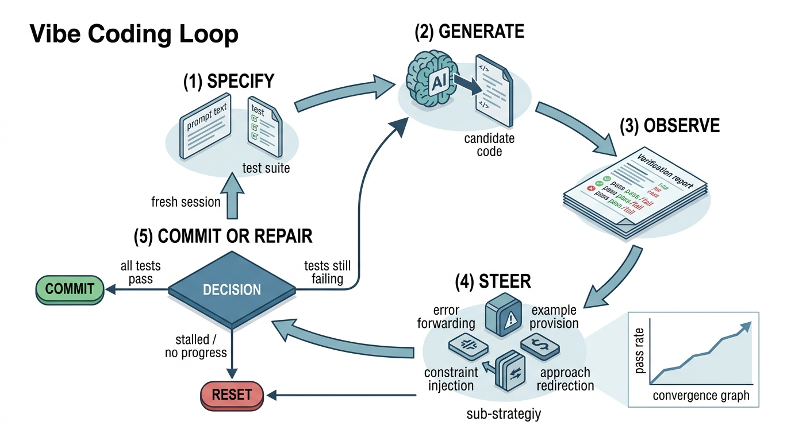

Prerequisites
Section 9.1: Natural Language as Specification defined the specification gap and its four components. The present section puts that framework into motion as an iterative loop. Chapter 8's treatment of code generation models provides context for the "generate" phase.
Vibe coding is not a one-shot process. You do not write a prompt, receive perfect code, and ship it. The reality is a loop: you specify intent, the model generates code, you observe the result (through tests, execution, or inspection), you steer the model with feedback, and you either commit the result or repair it. This loop has a formal structure analogous to the search processes of Chapter 1, with the specification gap narrowing on each iteration until the generated code satisfies all executable contracts. Understanding this loop structure lets you predict when vibe coding will converge quickly, when it will stall, and when you should abandon a session and start fresh.
1. The Five Phases
Picture a developer who has just pasted twenty test cases and a plain-English description into an AI coding assistant: within seconds a candidate implementation appears, six tests pass, fourteen fail, and the real work begins. That "real work" is a five-phase cycle that repeats until every test goes green or the developer decides to scrap the session and start fresh. Each phase has a distinct purpose and a distinct set of artifacts. Figure 9.2 shows the loop structure, including the reset path that returns to the specify phase when convergence stalls.
Without a structured loop, developers fall into one of two traps: they accept the first generated code and ship bugs they never noticed, or they rewrite prompts endlessly without converging on a working solution. The difference between frustration and fluency is knowing the shape of the cycle.
In the vibe coding loop, a human developer and an AI code generator collaborate through repeated rounds of specification, generation, testing, and correction. This structured cycle transforms AI code generation from a gamble on a single prompt into an engineering process with measurable, progressively improving quality. Each iteration feeds the test results and failure diagnostics from the previous round back into the model's context. The model therefore gains strictly more information about the target behavior with every pass. Use this loop (rather than manual coding or one-shot prompting) when the task is too complex for a single prompt to produce correct code, yet well-defined enough that you can write executable tests to judge correctness.
Phase 1: Specify. The developer writes a prompt that describes the desired behavior. Following the template from Section 9.1, this prompt includes task description, input/output schemas, behavioral requirements, edge cases, and examples. The developer also writes (or has previously written) executable contracts: test cases, type annotations, and schema validators. The specification phase produces two artifacts: the prompt text and the test suite.
Phase 2: Generate. The AI model receives the prompt (plus any relevant context: existing code, documentation, prior conversation) and produces code. In tools like Claude Code, this generation happens within an agentic loop (where the model autonomously invokes tools, reads files, and runs commands across multiple internal steps before returning a result) where the model can read existing files, run commands, and iterate internally before presenting its output. The generate phase produces one artifact: the candidate implementation.
Phase 3: Observe. The developer (or an automated pipeline) runs the executable contracts against the candidate implementation. This includes running the test suite, the type checker, the linter, and any end-to-end tests. The observe phase produces a verification report: which contracts pass, which fail, and what the failure messages say.
Phase 4: Steer. Based on the verification report, the developer provides feedback to the model. This feedback can take several forms: sharing error messages and stack traces, clarifying ambiguous requirements, adding new test cases that encode previously implicit assumptions, or providing examples of correct behavior. The steer phase refines the specification and provides the model with information about why its previous attempt was insufficient.
Phase 5: Commit or Repair. If all contracts pass, the developer commits the code. If contracts still fail after steering, the developer decides whether to continue the repair loop (return to Phase 2 with the steering feedback) or reset (start a new session with a revised specification). The commit/repair decision is the critical judgment call in vibe coding. In short: specify what you want, let the model try, check the evidence, tell it what it missed, and repeat until every contract passes or the session has earned a fresh start. Figure 9.2.1 illustrates the five-phase vibe coding loop with decision branches.

from dataclasses import dataclass, field
from enum import Enum
from typing import Callable
class LoopOutcome(Enum):
COMMIT = "commit"
REPAIR = "repair"
RESET = "reset"
@dataclass
class VibeCodeIteration:
"""One iteration of the vibe coding loop."""
iteration: int
prompt: str
generated_code: str
tests_passed: int
tests_failed: int
error_messages: list[str] = field(default_factory=list)
@property
def pass_rate(self) -> float:
total = self.tests_passed + self.tests_failed
return self.tests_passed / total if total > 0 else 0.0
@dataclass
class VibeCodingSession:
"""Tracks the full history of a vibe coding session."""
iterations: list[VibeCodeIteration] = field(default_factory=list)
max_iterations: int = 10
def should_reset(self) -> bool:
"""Heuristic: reset if pass rate has not improved in 3 iterations."""
if len(self.iterations) < 3:
return False
recent = self.iterations[-3:]
rates = [it.pass_rate for it in recent]
# No improvement across last 3 iterations
return rates[-1] <= rates[0]
def should_commit(self) -> bool:
"""Commit when all tests pass."""
if not self.iterations:
return False
return self.iterations[-1].tests_failed == 0
def decide(self) -> LoopOutcome:
"""Decide the next action based on session history."""
if self.should_commit():
return LoopOutcome.COMMIT
if self.should_reset():
return LoopOutcome.RESET
if len(self.iterations) >= self.max_iterations:
return LoopOutcome.RESET
return LoopOutcome.REPAIR
def convergence_rate(self) -> float:
"""Estimate convergence: slope of pass rate over iterations."""
if len(self.iterations) < 2:
return 0.0
rates = [it.pass_rate for it in self.iterations]
n = len(rates)
# Simple linear regression slope
x_mean = (n - 1) / 2.0
y_mean = sum(rates) / n
numerator = sum((i - x_mean) * (r - y_mean) for i, r in enumerate(rates))
denominator = sum((i - x_mean) ** 2 for i in range(n))
return numerator / denominator if denominator > 0 else 0.0
should_reset stall-detection heuristic and convergence_rate linear regression over pass rates.The vibe coding loop is an instance of the search framework from Chapter 1. The state space \(S\) is the set of all possible implementations. The actions \(A\) are prompt refinements and steering interventions. The transition function \(T\) is the code generation model. The objective \(f\) is the test pass rate. The constraints \(C\) are the type contracts and schema validators. Convergence of the loop corresponds to the search finding a state \(s^*\) where \(f(s^*) = 1.0\) (all tests pass) and all constraints are satisfied. The reset decision corresponds to restarting the search from a new initial state when the current trajectory is stuck in a local optimum (a solution that is better than its neighbors in the search space but not the best overall).
2. Convergence Dynamics
Knowing the five phases tells you what to do at each step; the next question is how many trips around the loop you should expect before the code is ready.
Not all vibe coding sessions converge at the same rate. The convergence speed depends on three factors: the completeness of the initial specification, the complexity of the target code, and the quality of the steering feedback.
We can model convergence formally. Let \(p_t\) denote the test pass rate at iteration \(t\). In the ideal case, each iteration fixes at least one failing test without breaking any passing tests. This gives us a monotonically increasing sequence (each term is at least as large as the previous one):
$$p_{t+1} \geq p_t + \frac{1}{N}$$where \(N\) is the total number of tests. Under this ideal model, convergence takes at most \(N\) iterations. In practice, iterations are not monotonic: fixing one test can break others, especially when tests are coupled through shared state. A more realistic model treats each iteration as a noisy step:
$$p_{t+1} = p_t + \alpha_t \cdot (1 - p_t) + \epsilon_t$$where \(\alpha_t \in [0, 1]\) is the repair efficiency (fraction of remaining failures that this iteration fixes) and \(\epsilon_t\) is noise from regressions. When \(\alpha_t\) is consistently positive and \(|\epsilon_t|\) is small relative to \(\alpha_t\), the loop converges. When \(\epsilon_t\) dominates, the loop oscillates: each repair introduces new failures at a rate comparable to the fixes.
Mental Model
Think of the vibe coding loop like tuning a guitar by ear. Each string you tune (a test you fix) can shift the tension on the neck and pull neighboring strings slightly out of tune (regressions). A skilled guitarist tunes in multiple passes, each time getting closer because the adjustments shrink. But if the neck is warped (a contradictory specification), no amount of retuning will get all six strings in tune simultaneously; you need to fix the neck first (resolve the specification conflict) before the iterative tuning process can converge. The repair efficiency \(\alpha_t\) corresponds to how accurately you can hear pitch, and the regression rate \(\epsilon_t\) corresponds to how much cross-string interference the instrument produces.
import numpy as np
def simulate_vibe_loop(
n_tests: int = 20,
repair_efficiency: float = 0.3,
regression_rate: float = 0.05,
max_iterations: int = 30,
seed: int = 42,
) -> list[float]:
"""
Simulate vibe coding loop convergence.
Parameters:
n_tests: total number of tests in the suite
repair_efficiency: fraction of failing tests fixed per iteration
regression_rate: probability that a passing test regresses per iteration
max_iterations: cap on iterations
seed: random seed for reproducibility
Returns:
List of pass rates across iterations.
"""
rng = np.random.default_rng(seed)
# Start with all tests failing
passing = np.zeros(n_tests, dtype=bool)
history = [0.0]
for _ in range(max_iterations):
# Repair: fix some failing tests
failing_indices = np.where(~passing)[0]
if len(failing_indices) == 0:
break
n_fix = max(1, int(len(failing_indices) * repair_efficiency))
to_fix = rng.choice(failing_indices, size=n_fix, replace=False)
passing[to_fix] = True
# Regression: some passing tests break
passing_indices = np.where(passing)[0]
regress_mask = rng.random(len(passing_indices)) < regression_rate
passing[passing_indices[regress_mask]] = False
history.append(passing.mean())
if passing.all():
break
return history
# Compare three scenarios
fast = simulate_vibe_loop(repair_efficiency=0.5, regression_rate=0.02)
normal = simulate_vibe_loop(repair_efficiency=0.3, regression_rate=0.05)
stalled = simulate_vibe_loop(repair_efficiency=0.15, regression_rate=0.10)
print(f"Fast convergence: {len(fast)-1} iterations, final pass rate {fast[-1]:.0%}")
print(f"Normal convergence: {len(normal)-1} iterations, final pass rate {normal[-1]:.0%}")
print(f"Stalled convergence: {len(stalled)-1} iterations, final pass rate {stalled[-1]:.0%}")
# Fast convergence: 7 iterations, final pass rate 100%
# Normal convergence: 14 iterations, final pass rate 100%
# Stalled convergence: 30 iterations, final pass rate 75%
The simulation suggests an approximate threshold: when the regression rate exceeds roughly one-third of the repair efficiency, the loop typically stalls. In practice, every prompt that fixes one bug introduces a new one. Two root causes dominate. First, the specification may be internally inconsistent, with two requirements that contradict each other. Second, the model's context window (the maximum amount of text the model can consider at once, typically measured in tokens) may have accumulated enough conflicting instructions that it cannot satisfy all of them at once. To fix the first, review the test suite for contradictions. To fix the second, reset the session with a cleaner, consolidated prompt.
A researcher is building a data ingestion pipeline using Claude Code. After 8 iterations, the pass rate oscillates between 60% and 70%. Inspection reveals the problem: two tests make contradictory assumptions about how the pipeline handles duplicate records. One test expects deduplication by timestamp (keeping the latest), while another test expects deduplication by record ID (keeping the first). The model cannot satisfy both simultaneously. The fix is not a better prompt; it is a product decision about which deduplication strategy to use. Once the researcher removes the contradictory test, the next iteration reaches 100% pass rate. This example illustrates why the specification gap from Section 9.1 is a design problem, not a coding problem. The vibe coding loop surfaces design decisions that traditional development might not encounter until integration testing.
3. Session Management Strategies
A vibe coding session accumulates context: the initial prompt, each steering message, error logs, generated code, and the model's internal reasoning. This context grows with each iteration, and context quality degrades in predictable ways.
Context dilution occurs when the session's context window fills with debugging artifacts (stack traces, intermediate attempts, abandoned approaches) that distract the model from the core specification. The signal-to-noise ratio (the proportion of useful specification content relative to accumulated debugging artifacts) of the context tends to decrease with session length.
Common Misconception
Many beginners assume that more iterations always bring the code closer to correct. In reality, each iteration adds context to the conversation, and past a certain point the accumulated noise (old stack traces, abandoned approaches, contradictory steering) actively degrades the model's output. A 20-iteration session is not twice as good as a 10-iteration session; it is often worse, because the model loses track of the core specification under layers of debugging artifacts. When progress stalls, resetting with a clean, consolidated prompt is faster than continuing to steer.
Context contradiction occurs when early steering messages conflict with later ones. "Use pandas for the CSV parsing" followed ten messages later by "actually, use the csv module to avoid the pandas dependency" leaves both instructions in the context, and the model may follow either one.
Context anchoring occurs when the model becomes anchored to an early (incorrect) implementation choice and makes incremental patches rather than reconsidering the overall approach. This is the AI equivalent of the sunk cost fallacy.
Checkpoint
So far: a vibe coding session can degrade in three distinct ways: dilution (too much noise burying the specification), contradiction (conflicting instructions coexisting in context), and anchoring (the model clinging to a flawed early approach despite steering).
from dataclasses import dataclass
from enum import Enum
class SessionHealth(Enum):
HEALTHY = "healthy" # pass rate improving, no contradictions
DILUTED = "diluted" # context noisy, but still improving
CONTRADICTED = "contradicted" # conflicting instructions detected
ANCHORED = "anchored" # stuck on wrong approach
@dataclass
class SessionDiagnostic:
"""Diagnose the health of a vibe coding session."""
iterations: list[VibeCodeIteration]
def diagnose(self) -> SessionHealth:
if len(self.iterations) < 2:
return SessionHealth.HEALTHY
rates = [it.pass_rate for it in self.iterations]
# Check for contradiction: oscillating pass rate
if len(rates) >= 4:
oscillations = sum(
1 for i in range(2, len(rates))
if (rates[i] - rates[i-1]) * (rates[i-1] - rates[i-2]) < 0
)
if oscillations >= len(rates) // 2:
return SessionHealth.CONTRADICTED
# Check for anchoring: same errors repeating
if len(self.iterations) >= 3:
recent_errors = [
set(it.error_messages) for it in self.iterations[-3:]
]
# If the same errors appear in all 3 recent iterations
common = recent_errors[0] & recent_errors[1] & recent_errors[2]
if len(common) > 0:
return SessionHealth.ANCHORED
# Check for dilution: improving but slowly
if len(rates) >= 5:
recent_improvement = rates[-1] - rates[-5]
if 0 < recent_improvement < 0.1:
return SessionHealth.DILUTED
return SessionHealth.HEALTHY
def recommend_action(self) -> str:
health = self.diagnose()
actions = {
SessionHealth.HEALTHY: "Continue: the session is converging normally.",
SessionHealth.DILUTED: (
"Consolidate: summarize the current state and requirements "
"in a fresh message to reset the effective context."
),
SessionHealth.CONTRADICTED: (
"Review tests: check for contradictory requirements "
"in the test suite. Resolve the contradiction, then reset."
),
SessionHealth.ANCHORED: (
"Reset: start a new session with a revised specification "
"that explicitly excludes the anchored approach."
),
}
return actions[health]
4. Steering Strategies
Diagnosing a sick session is only half the battle; the other half is choosing the right intervention to get convergence back on track.
The quality of steering feedback directly determines convergence speed. Four strategies have proven effective in practice, roughly ordered from least to most informative.
Error forwarding is the simplest strategy: copy the error message or failing test output and paste it into the conversation. This gives the model a concrete signal about what went wrong but no guidance about what to do instead. Error forwarding is sufficient for straightforward bugs (typos, import errors, off-by-one mistakes) but often fails for design-level problems.
Constraint injection adds a new constraint to the specification. "The function must also handle the case where the input list is empty" or "Use only the standard library, no pandas." This narrows the search space \(S_{\text{prompt}}\) from Section 9.1, reducing the specification gap. Constraint injection is effective when the root cause of a failure is underspecification.
Error forwarding and constraint injection address what went wrong; example provision and approach redirection address how to fix it.
Example provision gives the model a concrete input-output pair that demonstrates the desired behavior. "For input [3, 1, 2], the output should be [1, 2, 3], not [1, 2]." Examples are more informative than constraints because they simultaneously constrain the behavior and demonstrate the expected format.
Approach redirection tells the model to abandon its current implementation strategy and try a different one. "Instead of using recursion, use an iterative approach with a stack" or "This needs a different data structure; use a heap instead of a sorted list." Approach redirection is the most invasive steering strategy but is necessary when the model is anchored to an unsuitable approach.
from enum import Enum
class SteeringStrategy(Enum):
ERROR_FORWARD = "error_forward"
CONSTRAINT_INJECT = "constraint_inject"
EXAMPLE_PROVIDE = "example_provide"
APPROACH_REDIRECT = "approach_redirect"
def select_steering_strategy(
iteration: VibeCodeIteration,
session: VibeCodingSession,
) -> SteeringStrategy:
"""
Select the appropriate steering strategy based on session state.
Rules of thumb:
1. First failure: forward the error.
2. Same error twice: add a constraint or example.
3. Three iterations with no improvement: redirect approach.
4. Oscillating pass rate: review for contradictions first.
"""
if len(session.iterations) <= 1:
return SteeringStrategy.ERROR_FORWARD
prev = session.iterations[-2]
# Same errors repeating: escalate from error forwarding
if set(iteration.error_messages) & set(prev.error_messages):
# Tried error forwarding already, provide an example
if len(session.iterations) >= 3:
prev_prev = session.iterations[-3]
if set(iteration.error_messages) & set(prev_prev.error_messages):
# Three iterations, same errors: redirect approach
return SteeringStrategy.APPROACH_REDIRECT
return SteeringStrategy.EXAMPLE_PROVIDE
# Pass rate not improving but errors are different: add constraints
if iteration.pass_rate <= prev.pass_rate:
return SteeringStrategy.CONSTRAINT_INJECT
# Default: forward the new errors
return SteeringStrategy.ERROR_FORWARD
Experienced vibe coders develop an internal metronome for the loop. A healthy session has a rhythm: specify (30 seconds), generate (10 seconds), observe (5 seconds), steer (20 seconds), repeat. When the "steer" phase stretches beyond a minute, it usually means you are writing a paragraph-length explanation of something that should be a test case. Write the test instead. When the "observe" phase takes more than 30 seconds, it usually means your tests are too slow. Fast tests are not a luxury; they are a prerequisite for tight loop iteration.
5. The Reset Decision
Even the best steering strategy has limits; sometimes the most productive move is to walk away from the accumulated context and begin again.
The hardest judgment call in vibe coding is when to reset. Discarding accumulated context feels wasteful, but a stalled session costs more than a fresh start: each additional iteration adds noise without making progress.
Three signals reliably indicate that a reset is warranted:
Plateau detection: the pass rate has not improved by more than 5% in three consecutive iterations. This suggests the model is making lateral moves in the solution space rather than converging.
Error cycling: the same error message appears, disappears, and reappears across iterations. This indicates that fixes for one test are regressing another, and the model is cycling between two incompatible solutions.
Context overflow: the conversation has exceeded roughly 50 messages or 20,000 tokens of steering feedback. At this point, early context is being pushed out of the model's effective attention window, and the model may lose track of core requirements (even with context windows of 128K tokens or more, available since 2024, attention quality degrades over long conversations; the bottleneck is not raw capacity but the model's ability to prioritize relevant instructions amid accumulated noise).
When resetting, the developer should carry forward three artifacts from the failed session: the test suite (which has been refined through the session), the consolidated specification (incorporating all clarifications), and a brief note about which approaches failed. The note serves as negative context: "Do not use recursion for this problem; an iterative approach with a heap is needed."
The VibeCodingSession tracker above illustrates the loop mechanics, but
in practice, Claude Code implements much of this loop internally. When you ask Claude
Code to "implement the function that passes these tests," it enters an agentic loop:
it generates code, runs the tests, reads the output, and iterates, often completing
3 to 5 internal repair cycles before presenting its result. The external loop (your
steering) wraps the internal loop (the model's self-repair). Understanding both loops
helps you intervene at the right level: let the internal loop handle syntax errors and
simple logic bugs; reserve external steering for specification clarifications and
design decisions. This two-level structure is a special case of the multi-agent
orchestration patterns we explore in
Chapter 17: Multi-Agent Software Teams.
Olausson et al. (2023) demonstrated that large language model (LLM) self-repair (feeding error messages back to the model) improves pass@1 (the probability that the model's single best attempt passes all tests) on HumanEval (a benchmark of 164 hand-written Python programming problems) by 5 to 15 percentage points, but with sharply diminishing returns: the second repair attempt adds roughly half the value of the first, and the third adds roughly half again. Ridnik et al. (2024) showed that structured "flow engineering" (alternating between generation and testing in a fixed pipeline) outperforms both single-shot generation and unstructured self-repair. More recently, Anthropic's SWE-bench Verified results (circa 2025) showed that agentic coding systems combining tool use, test execution, and structured self-repair (as implemented in Claude Code) achieve over 70% autonomous resolution of real GitHub issues, a benchmark that pure single-shot or unstructured repair approaches plateau well below 40% on (by mid-2026, leading agentic systems have pushed SWE-bench Verified scores above 75%, confirming that tighter tool integration and structured repair loops continue to yield gains). This leap came not from better base models alone but from tighter integration of the observe-steer-repair loop into the agent architecture itself, with the agent autonomously writing and running tests as part of its repair cycle. These findings reinforce the core lesson of this section: the outer loop (human steering) remains essential for specification-level decisions, but a well-structured inner loop can now handle a surprisingly large fraction of implementation-level repair autonomously.
Try It: Track Your Own Convergence Curve
Run a real vibe coding session and measure its convergence dynamics using only Python and a text editor.
Step 1. Write a small test suite (5 to 8 tests) for a function you
need, such as a Markdown table parser that converts pipe-delimited text into a list
of dictionaries. Save it as test_parser.py using pytest.
Step 2. Open a session with an AI coding assistant (Claude Code,
GitHub Copilot Chat, or similar). Paste your test file and ask it to implement the
function. Record the iteration number, how many tests pass, and how many fail in a
simple CSV: iteration,passed,failed.
Step 3. For each iteration where tests fail, apply one steering strategy from Section 4 (error forwarding, constraint injection, example provision, or approach redirection). Note which strategy you used in an additional CSV column.
Step 4. After the session converges (or you reset), plot the pass rate
over iterations using matplotlib: plt.plot(iterations, pass_rates, marker='o').
Annotate each point with the steering strategy you used.
Step 5. Compute the empirical repair efficiency for each iteration: \(\alpha_t = (p_{t+1} - p_t) / (1 - p_t)\). Compare your values to the simulation in Section 2. Does your curve follow the diminishing-returns pattern, or does a well-chosen steering intervention cause a jump in repair efficiency?
Exercise 9.2.1
A vibe coding session has the following pass rates over six iterations:
[0.0, 0.25, 0.50, 0.45, 0.55, 0.50]. Using the VibeCodingSession class
from this section, manually compute what should_reset() returns after
iteration 6 and what convergence_rate() returns over the full sequence.
Then determine: should the developer commit, repair, or reset? What
SessionHealth would the diagnostic assign, and why?
Hint
For should_reset(), look at the last three pass rates: [0.45, 0.55, 0.50].
The condition checks whether rates[-1] <= rates[0]. For
convergence_rate(), compute a simple linear regression slope over all six
values. For the session health diagnostic, count how many consecutive pairs alternate
between increasing and decreasing (the oscillation check).
Step-Through: Session Diagnosis
Trace through the SessionDiagnostic.diagnose() method with this five-iteration
history (pass rates: [0.0, 0.4, 0.6, 0.5, 0.7], error messages per iteration:
[["TypeError"], ["KeyError"], ["TypeError"], ["KeyError"], ["TypeError"]]).
Step 1 (oscillation check): We have 5 rates, so we check from index 2 onward.
Index 2: (0.6 − 0.4) × (0.4 − 0.0) = 0.2 × 0.4 = 0.08 > 0, no oscillation.
Index 3: (0.5 − 0.6) × (0.6 − 0.4) = −0.1 × 0.2 = −0.02 < 0, one oscillation.
Index 4: (0.7 − 0.5) × (0.5 − 0.6) = 0.2 × −0.1 = −0.02 < 0, two oscillations.
Threshold is 5 // 2 = 2. We have 2 oscillations = threshold, so the condition
oscillations >= len(rates) // 2 is met. Result: CONTRADICTED.
Step 2 (recommendation): The diagnostic returns "Review tests: check for contradictory requirements in the test suite. Resolve the contradiction, then reset." The alternating TypeError/KeyError pattern confirms that fixes for one failure mode trigger the other.
Real-World Application: Vercel's v0 Generative UI
Vercel's v0 product implements the vibe coding loop for frontend components. A user describes a UI element in natural language, v0 generates React code with Tailwind CSS (a utility-first CSS framework that composes styles from small, single-purpose class names), and the user sees a live preview (the "observe" phase). Steering happens through follow-up prompts like "make the sidebar collapsible" or "use a darker color scheme." Internally, v0 tracks which iteration the user is on and carries forward only the consolidated specification, not the full conversation history, to avoid the context dilution problem described in this section.
Lab: Measuring Your Repair Efficiency
Goal: Empirically measure \(\alpha_t\) (repair efficiency) and \(\epsilon_t\) (regression rate) across a real vibe coding session and compare them to the simulation from Section 2.
Tools needed: Python 3.10+, pytest, matplotlib, and access to any AI coding assistant (Claude Code, GitHub Copilot, or a free-tier alternative).
Setup (5 min): Write a pytest suite with exactly 10 tests for a small utility function (for example, a function that parses a cron expression string into its five fields with validation). Save the tests but do not write the implementation.
Experiment (15 min): Run the vibe coding loop for at least 6 iterations. After each iteration, record (a) the number of newly passing tests, (b) the number of previously passing tests that now fail (regressions), and (c) which steering strategy you used. Compute \(\alpha_t\) and \(\epsilon_t\) per iteration.
What to vary: Run the experiment twice: once using only error forwarding for steering, and once escalating through all four strategies from Section 4. Compare the convergence curves.
What to observe: Does the escalating strategy produce a measurably higher \(\alpha_t\)? At which iteration does the difference become most visible? Plot both convergence curves on the same axes and annotate each point with its steering strategy.
Exercises
- (Conceptual) A vibe coding session has produced the following pass-rate trajectory over 8 iterations: [0.0, 0.4, 0.6, 0.5, 0.7, 0.65, 0.7, 0.7]. Diagnose the session health using the three signals (plateau, error cycling, context overflow). What would you recommend: continue, consolidate, or reset? Justify your answer.
-
(Coding) Extend the
simulate_vibe_loopfunction to accept asteering_boostparameter that increases repair efficiency by 50% every 5 iterations (simulating effective human steering). Compare the convergence curves with and without the boost. How many iterations does the boost save in the "stalled" scenario? - (Analysis) Run a real vibe coding session with Claude Code (or another AI coding assistant). Ask it to implement a function to merge two sorted lists. Track the pass rate across at least 5 iterations. Plot the convergence curve and compute the empirical repair efficiency \(\alpha_t\) for each iteration. Does the diminishing-returns pattern from the research literature hold?
What's Next
The vibe coding loop gives us a process; now we need teeth. Section 9.3: Verification and Repair dives deep into the verification tools that make the "observe" phase rigorous: pytest for example contracts, Hypothesis for property contracts, Pydantic for schema contracts, and static analysis for structural contracts. Together, these tools transform the loop from a hope-and-check cycle into an engineering discipline with measurable quality guarantees.